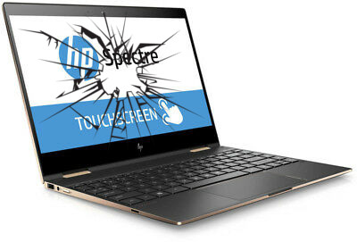
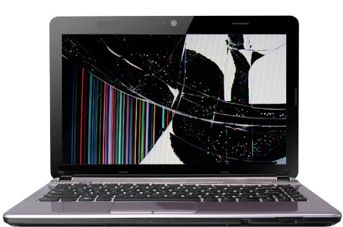

Flut ça répare les PC !!!!


formation réparation PC
réparation carte mère
Apprendre à réparer des pc portables !
Reparation écran PC portable
Démontage / réparation Réparation carte graphique acer
Retour en haut ↑
 Retour en haut ↑
Retour en haut ↑